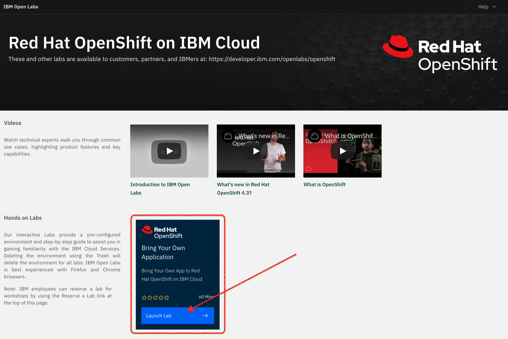
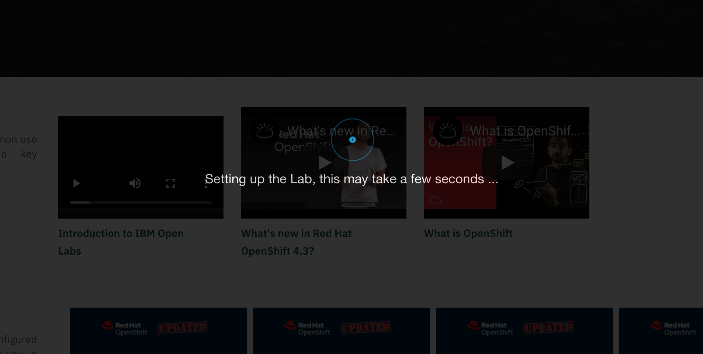
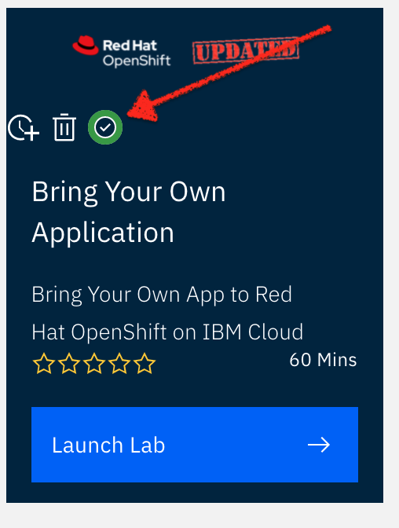
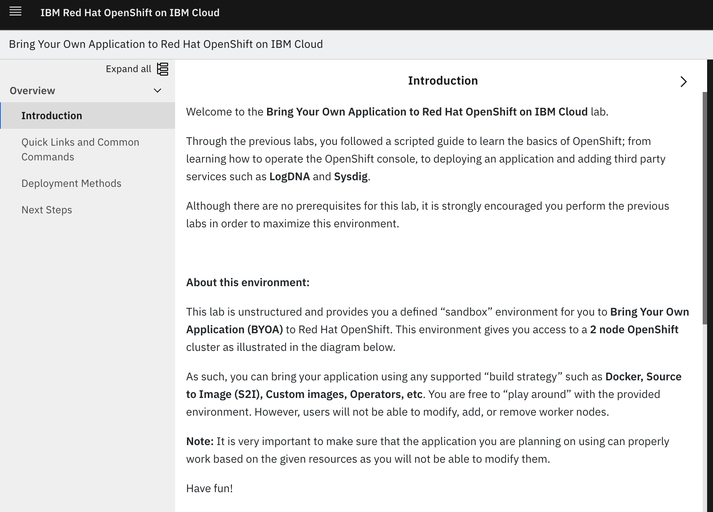

Prerequisites
Provision Your Cluster
Depending on the type of workshop you’re participating in, you may or may not have had a cluster provisioned for you ahead of time. Select from the tab below that best matches your workshop
You will be provisioning your cluster with the "Bring Your Own Application" Lab of IBM’s Open Labs to complete this workshop.
| This section assumes you have an IBM Cloud Account. If you do not have an IBM Cloud account, instructions for obtaining a free IBM Cloud account (no credit card required) can be found here. |
-
Navigate to the IBM Open Labs page for OpenShift
-
Scroll down and click the
Launch Labbutton on the "Bring Your Own Application" Lab from the listing of labs -
If you are not already logged in, you may be prompted to log in with your IBM Cloud account (or register for a new one)
-
If you have successfully signed in and authenticated, you will see a screen like the following. (it will take a minute or two to provision the lab)
 -
Once the lab has been provisioned, you will be redirected to the IBM Open Labs start screen, only this time the labs should show a green tick indicating that the cluster has been provisioned
 -
Next, click on the
Launch Labbutton again. This time you will be brought to the Bring Your Own Application to Red Hat OpenShift on IBM Cloud Dashboard.
Congratulations! You have successfully provisioned the cluster you will be using for today’s lab! We’ll see how to access the cluster’s console in the following sections.
Your cluster should have been provisioned for you ahead of time. Contact your workshop assistants for this information.